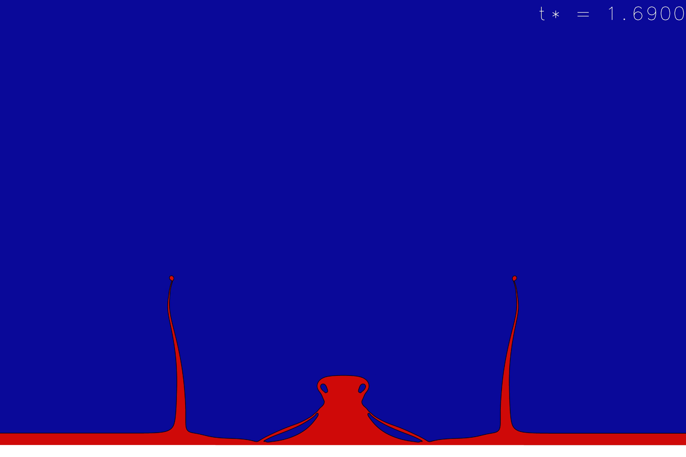

Research
My work combines numerical methods and scientific computing to study fluid interfaces, drop impact and fish hydrodynamics.
Fish swimming & hydrodynamics
I use immersed-boundary simulations to study the interaction between fish motion and the surrounding fluid. My applications use IBAMR and ConstraintIB with adaptive grids.
These visualizations come from separate 3D and 2D simulations.
Drop impact & interfacial flows
I investigate how drops and bubbles deform during impact, including interface evolution, jet formation and forces on a target. I use Basilisk and adaptive grids to study these processes.
Simulation images


Related published work
Thale, V. A., Abouelsoud, M., Chizari, H. & Thoraval, M.-J. (2024). Impact force of an air-in-liquid compound drop. Physics of Fluids, 36, 022110. Read the paper ↗
Open-source scientific computing
I develop and apply CFD tools using Basilisk and IBAMR, including simulations of multiphase flow and fluid–structure interaction.
Aquaculture & agricultural flows
My work also considers flow and transport in recirculating aquaculture systems and other agricultural engineering applications.